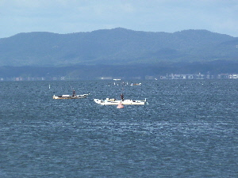
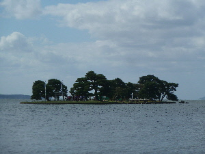
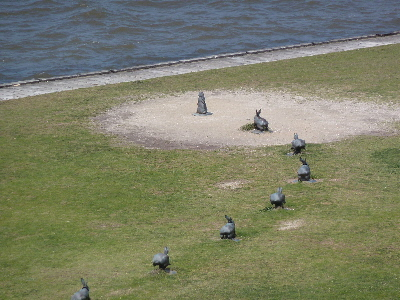
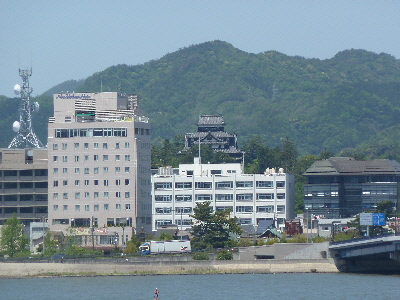
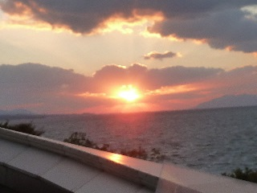
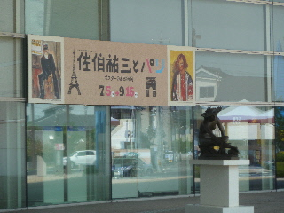
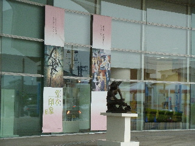
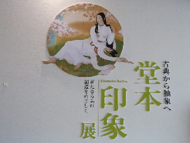
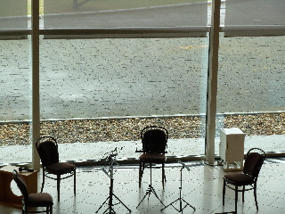
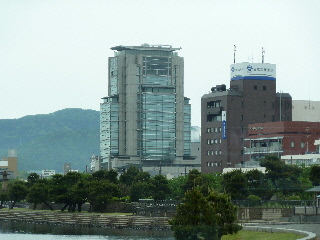

県立美術館のそばでミズベリング縁日やっていました。
2016/10/10
今日は水辺のイベントってことででしょうか、シジミ漁船が沢山宍道湖に出てました。
観光用な感じで、作業はしてなかったかな。

嫁が島ではお茶会をやっているようです。

行ってみたいとも思ったんですが、船賃がそこそこしたので今回は遠慮しました。
またなにかの機会があったら、嫁が島に行ってみたいです。
島根県松江市袖師町1-5
2016/10/10
今日は水辺のイベントってことででしょうか、シジミ漁船が沢山宍道湖に出てました。
観光用な感じで、作業はしてなかったかな。

嫁が島ではお茶会をやっているようです。

行ってみたいとも思ったんですが、船賃がそこそこしたので今回は遠慮しました。
またなにかの機会があったら、嫁が島に行ってみたいです。
2016/05/05
たまたまお昼時に行ったせいか、島根県立美術館が空いてました。

ウサギの周りにも観光客がいませんでした。

遠いですが、松江城も良く見えました。
今日は混んでるかなーと思ったんですが、快適に美術鑑賞出来て良かったです。
2014/11/03
県立美術館で植木茂展を見に行きました。
何だろう？って感じの変わった形の彫刻が沢山展示してありました。
企画展、常設展を見終わったら夕日の時間になっていました。

屋上から見た夕日です。
綺麗なんですけど、建物が視界に入っちゃうんですよね。
外で見たほうが良かったかな？
嫁ヶ島が見えるポジションで夕日を見ている人が多かったです。
2013/08/11
夏の美術館はいいですよ。
涼しくて快適な空間で、のんびり綺麗な絵が見れます。
お勧めです。

今日は島根県立美術館の「佐伯祐三とパリ」展です。
でも正直難しかったです。
が、絵は沢山ありますので、好きな作品があるかもしれません。
避暑にどうぞ。
今日の宍道湖は湖面がキラキラしてて綺麗でした。
夕日も綺麗でした。
2013/05/19
今日はのんびり美術鑑賞です。

でも堂本印象さんって全然知らない。

ポスターやチラシを見ると、綺麗な絵です。
実際に展示品を見た感想ですが、色々あって面白かったです。
綺麗なのも、不気味なのも、何だかわからないもの、なんかカッコイイものとかありました。
予備知識なくても十分楽しめました。
気にいったので、「交響」と「猫」の絵葉書を買って帰りました。

今日はロビーコンサートがありました。
お客さんが多く、早い時間に席をとらないと座れなかったです。
で、「出雲芸術アカデミー音楽院」講師の皆様による弦楽四重奏がありました。
生の演奏はいいですね。
お客さん多いのも納得です。これは実際に聴かないとわからないですね。

演奏を聴きながら景色を見てたんですが、変な格好の山陰合同銀行のビルも見慣れたなーって思いました。
周りのビルも同じ感じなるといい景色かも？って思いました。